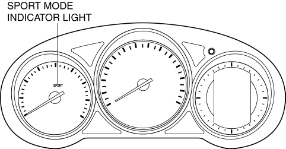
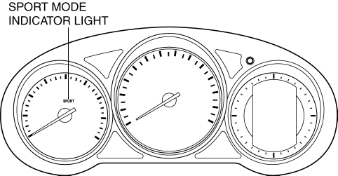

The SPORT mode indicator light illuminates when SPORT mode is selected using the drive selection switch.
The sport mode indicator light is built-into the instrument cluster. 
The sport mode indicator light is built-into the instrument cluster.
